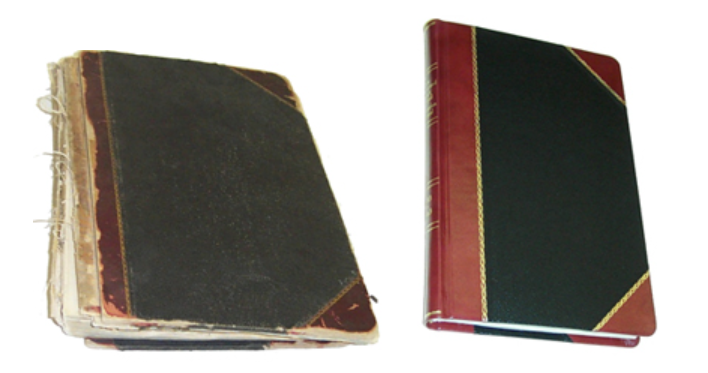
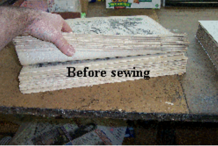
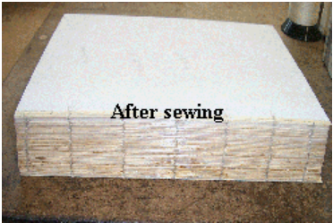

We perform all kinds of book repair, from simple spine repair to full binding replacements. We specialize in preserving the period look and feel of books, but are aware of your budgetary needs and offer a wide variety of options to suit every taste and budget. (Sewing machine for binding shown at left, selection of marbled end-papers below.)
Below is an example of a journal showing the book before the repair and after. The style of the original 3/4 leather binding has been maintained and in the same color combination as the original.
Sometimes, more extensive repair is required, and not only the binding needs repaired, but the text block may also require our help. As can be seen in the photo on the right, the sewing was broken, requiring the sections of the book to be re-sewn by hand. The repaired sewing is shown below.
 